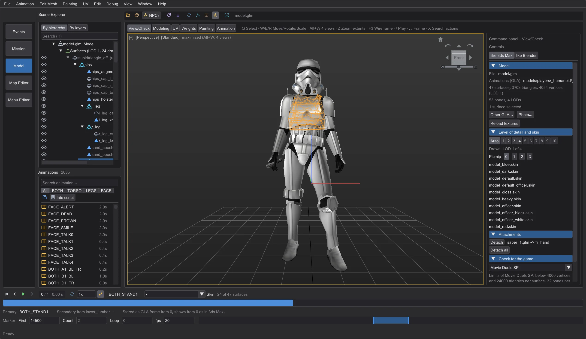
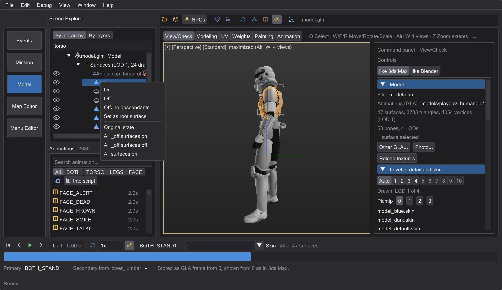
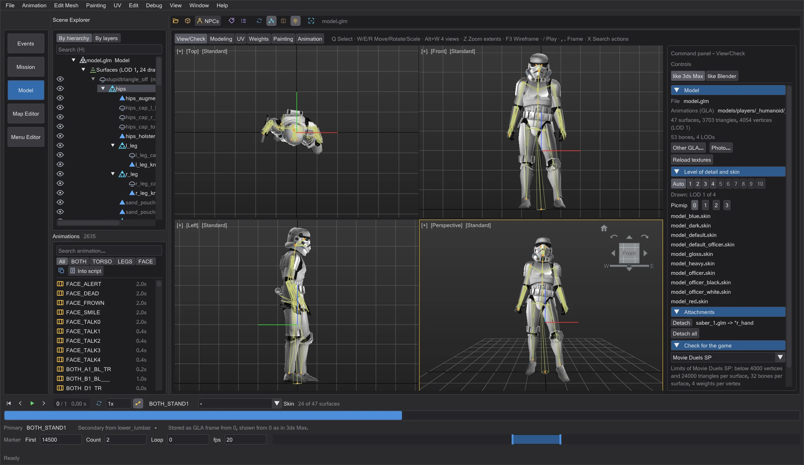

Model tab: view and check
Look at a model like in ModView - surfaces, tags, bones, LODs, skins, attached sabers, primary and secondary animation - drawn the way the game draws it, and check it against the limits of Jedi Academy, Jedi Outcast and Movie Duels. Mouse and keys work like 3ds Max.

Open a model as before (NPCs, .glm, .pk3). The tab starts in View/Check; the other areas (Modeling, UV, Weights, Painting, Animation) come in the next stages of the model block - their views, explorer and timeline already work. The model is loaded into its own document with every level of detail; drawing an unchanged model gives exactly the same picture as before (checked with every model under models/players of Jedi Academy, Jedi Outcast and Movie Duels).
Scene explorer#
The Scene Explorer shows the surfaces (By hierarchy or By layers), the tags and the bones of the skeleton; Search (H) filters by name. Grey surfaces are not drawn. A right-click works like in ModView and like the game (G2_SetSurfaceOnOff, G2_SetRootSurface): Off hides the surface but keeps its children, Off, no descendants hides the whole branch, Set as root surface draws only this branch, Original state undoes it all. A skin line name,*off switches a surface off the same way. Bones with an orange dot are looked up by the game code.

Right-click a tag (for example *r_hand) or a bone and choose Attach model to attach a model from the game archives - a saber, a weapon, a head - like G2API_AttachG2Model: on a tag it follows the tag triangle, on a bone the bone. The rollout Attachments lists them and detaches them again.
Command panel#
Model: file, skeleton, numbers, Other GLA (GLA override from the archives), Reload textures (Alt+R) and Photo (the active view, at least 1920 pixels wide). Level of detail and skin: LOD 1-10 or Auto - as in the game, a figure in single player always draws LOD 1, in multiplayer the distance picks the level; picmip and the skins. Display: wireframe, edged faces, bones as 3ds Max bone objects (with fins), vertex weights (with a bone selected: its weight from blue to red), normals, tags, origin, bounding box, floor and grid, white textures, crack finder (open edges of the selected surfaces), two-sided, statistics, field of view.
Click an animation in Animations to play it as Primary (whole body). Right-click another one and choose Secondary from to play it on the upper body from lower_lumbar up, like SET_ANIM_UPPER in the game (another start bone: right-click a bone). Interpolation blends between two frames like the game. The timeline counts frames from 0 like 3ds Max and the animation.cfg.
Check for the game#
Check for the game checks the model against the target game: vertices and triangles per surface (Jedi Academy and Jedi Outcast stop with an error at 1000 vertices, Movie Duels at 4000), 32 bones per surface, 4 weights per vertex, the Ghoul2 instances (MAX_G2_MODELS), every line of the animation.cfg against the frames of the GLA (behind the end the figure stands in T-pose in OpenJK-based games, the original keeps it standing) and surfaces without a texture or shader.
Controls like 3ds Max#
Controls like 3ds Max is the default; the key map like Blender comes in stage 1a-2. The keys work after a click into the view, the explorer, the command panel or the timeline; X lists them all. The gizmo moves, rotates or scales the selected surfaces in the model document (all levels of detail) - Ctrl+Z takes it back.
| Middle mouse / Alt + middle / wheel | Pan / orbit / zoom (Ctrl + Alt + middle: zoom by dragging) |
| Left click / drag | Select a surface / select with a frame (Ctrl adds, Alt removes) |
| Q / W / E / R | Select, move, rotate, scale (F5 / F6 / F7 restrict to X / Y / Z, F8 planes, + / - gizmo size) |
| Alt+W / P T F L B / Z | Four views or one / perspective, top, front, left, bottom / zoom extents (selection) |
| F3 / F4 / G / J / 7 | Wireframe, edged faces, grid, selection bracket, statistics |
| / , . Home End | Play/stop, one frame back/forward, first/last frame |
| Ctrl+A / Ctrl+D / Ctrl+I / H | Select all, none, invert; select by name |
